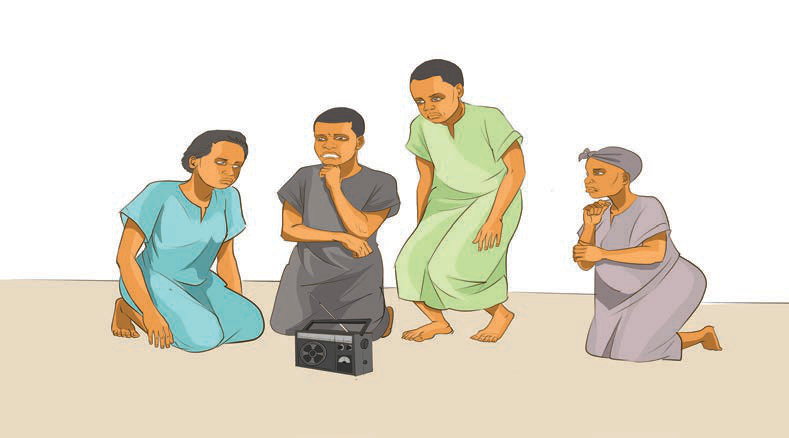

Mime
It is a form of performing arts in which performers use actions without words to convey a message to the audience. It is a powerful type of acting that relies entirely on body language, such as gestures, posture, and facial expressions, to convey messages without using words. The origin of mime can be traced back to early human history when the first human beings began to struggle with their lives. They used body language to communicate at a time when spoken language had not yet been discovered. For this reason, body language is considered an ancient form of communication that human beings used in the earliest stages of interaction.
As a form of performing arts, mime became popular in the 20th century. It was widely used in theatre and became a key element in early films, before the invention of sound technology. These early silent films relied completely on the actors’ ability to express themselves through mime to tell stories and engage viewers emotionally. Despite the advancements of technology and the development of sound in media, mime continues to hold an important place in both film and theatre. It is still used today in stage performances, movies and other forms of artistic expression. Mime also goes beyond the stage. People use gestures and body language in everyday situations to communicate when words are not available or necessary. Figure 2 shows the pupils performing a mime.
